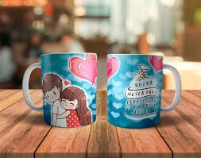
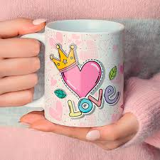
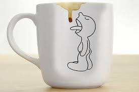

Sublimar es un método de personalización que permite trasladar un diseño que tú mismo hayas creado en diferentes artículos, en nuestro caso, en una taza.
La creación de una experiencia personalizada, donde el cliente pueda ver cómo su diseño se integra perfectamente en la taza, o incluso interactuar con un proceso de creación virtual


